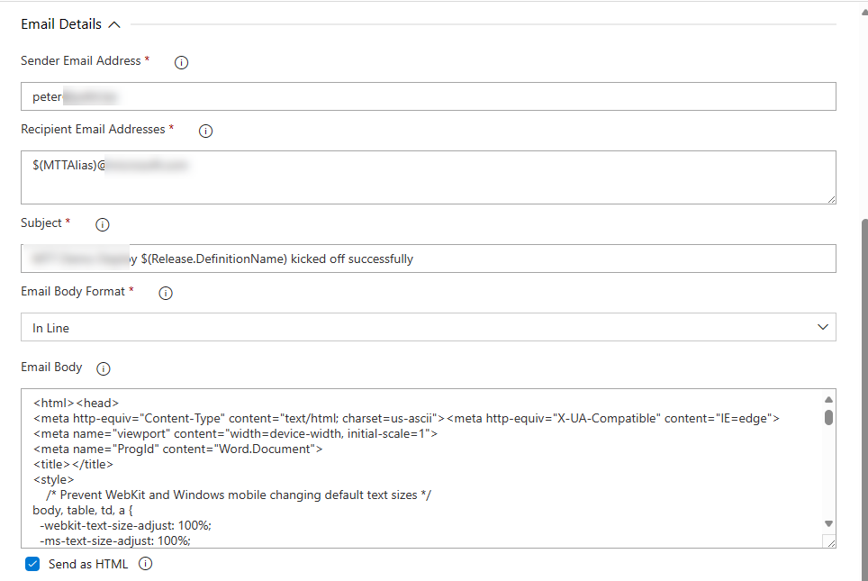
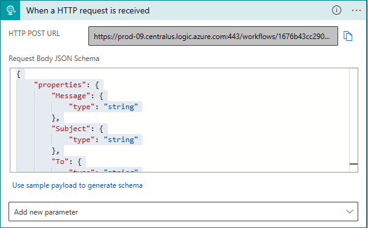
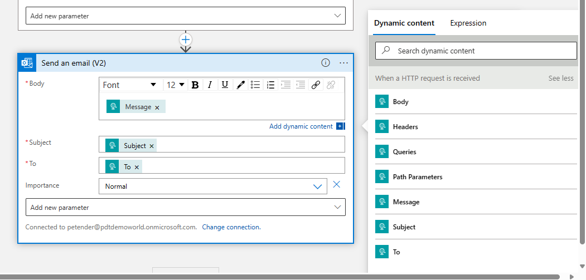

Hi Readers,
This post is merely for myself, documenting all the steps I needed to go through to be able to send emails from a PowerShell script, as part of an Azure DevOps YAML pipeline flow. And since I was documenting it for our internal application, I thought it would hopefully help someone out there looking for a similar solution.
Why not using the built-in Email Notification system
Azure DevOps provides email notification features, but this comes with a few assumptions. The biggest one being the receiver(s) should be Project Members. Which was not the case in my scenario, since I want to send out deployment status emails, at the start of a pipeline and when completed successfully, to external recipients.
What’s wrong with Marketplace Extensions?
In my Classic Release Pipelines, I relied on Sendgrid, and it actually worked OK, and with the limited amount of emails (up to 100/daily), it was a free service on top.

Since I was migrating the full project away from Classic Release Pipelines to YAML, and wanted to customize the email flow a bit more, I started looking into other options. Keeping all functionality within my Azure subscription, was also a benefit.
The new setup architecture
In short, the new setup architecture is based on the following:
-
Azure LogicApp with HTTP Trigger, sending an Outlook 365 email based on parameters to an external recipient
-
ADO Release Pipeline using YAML tasks
-
One of the tasks is using Azure Powershell, to compose and send the email
Let’s detail each step a bit more.
Deploying and composing the Azure Logic App
The starting point is deploying the Azure Logic App, and composing the workflow steps.
-
Deploy an Azure Logic App resource using the Consumption plan (pay per trigger)
-
Once deployed, open the Logic App Designer, and choose **When an HTTP request is received" as trigger.
-
When it asks for a JSON Schema in the Request Body, you can use the ‘use sample payload to generate schema’, by entering the different parameters you need for the email details itself, in the JSON format. In my setup, I have the following fields:
- Message, which is the actual body of the email, and gets send along as a PowerShell script object;
- Subject, which contains the actual subject of the email, and also coming from the PowerShell script object;
- To, which contains the recipient’s email address, and passed on from the PowerShell script object;
|
|

-
When you save the Logic App with this step, it will provide you with the unique LogicApp HTTP Trigger URL to connect to. Save this URL on the side, since you need it later in the PowerShell script.
-
Add a new step to the workflow, choosing Send an Email. Authenticate with your Office 365 credentials (although other security options such as Service Principal might be required in your production setup).
-
The required fields for this step are Body, Subject and To. Mapping with the 3 property fields from the HTTP Trigger. Note, I created the property “Message”, instead of calling it “Body”, since the full HTTP Trigger JSON response we get in through the PowerShell script, is known as “Body”. So I made some mistakes there initially in not getting the correct information mapped as expected.
-
The nice thing with Logic Apps, is that any next step in the workflow, can reuse input values from any previous step.
-
For the Body-parameter of the Send an email step, we want to use the “Message” content from the HTTP Trigger response. Therefore, click in the Body-field, which will open the Dynamic content window. From here, it will show all known properties from the “When an HTTP request is received” step in the workflow.

- Select the necessary fields from the Dynamic content, and map them with the required fields of the Send an Email task:
|
|
This is all for now to get the Logic App configured.
The PowerShell script for sending emails
The idea is that the PowerShell script gets triggered from the YAML pipeline task. I initially tried using the Inline option, but that didn’t recognize the here-strings (gets explained later if you don’t know what this means…) as well as some other limitations. I also didn’t like having the actual Message/Body details - for which I’m using HTML and tables - in my YAML pipeline. So using the ScriptPath option was much cleaner. And also allowing a more flexible scenario, where I could call different ‘sendemail’.ps1 scripts, depending on the specifics of the pipeline tasks.
Let me first explain the high-level setup of the script:
- define param settings, capturing/transferring the parameters from the YAML task ScriptArguments
- create a variable for the LogicApp HTTP Trigger Url
- create a variable for the LogicApp HTTP Trigger Body data, holding the “To”, “Subject” and “Message” content
- create a variable for the LogicApp HTTP Trigger Headers information
- create a variable for the actual Invoke-RestMethod, sending all previous info along
Here are some of the snippets for each component of the script:
1. define param settings, capturing/transferring the parameters from the YAML task ScriptArguments
|
|
2. create a variable for the LogicApp HTTP Trigger Url
|
|
3. create a variable for the LogicApp HTTP Trigger Body data, holding the “To”, “Subject” and “Message” content
|
|
Note the usage of the @" “@, which is known as here-strings. Here-strings allow you to define multiline strings without needing to escape special characters or use concatenation.
In this code snippet, I’m using a here-string to define the value of the Subject property in the $body hash table. The @” at the beginning indicates the start of the here-string. The text within the here-string (between the @" and the closing “@) is preserved exactly as written, including line breaks and any special characters. The variable $BuildDefinitionName is interpolated within the here-string, and corresponds to a param object as defined at the start of the script. This will hold the actual ScriptArguments object from the YAML pipeline steps later.
Also note the positioning of the “@ all the way at the start of the line, as the here-strings cannot recognize and spaces or tabs before it - this will throw an error when running the script. (Told you I really wanted to document all by observations and issues before I got this working smoothly…)
4. create a variable for the LogicApp HTTP Trigger Headers information When you configured the HTTP Trigger step in the LogicApp, it shows a little popup message, saying the trigger expect the Header to have the content type of application/json. this is how you specify this.
|
|
5. create a variable for the actual Invoke-RestMethod, sending all previous info along
$sendemail = @{ Uri = $logicappUrl Method = ‘POST’ Headers = $headers Body = $body | ConvertTo-Json }
Invoke-RestMethod @sendemail
Eventually, save this file as start_email.ps1 or other filename that works for you, and make sure it is part of the ADO Repo where you have the YAML pipeline. To keep it a bit structured, I created a new subfolder Email with another subfolder .ado in which I stored the file.
REPO-ROOT /Email /.ado /start_email.ps1
I call this script at the start of the YAML pipeline, but also created a finish_email.ps1, which I’m calling at the end of the YAML pipeline successful completion.
The YAML pipeline task
With both LogicApp and PowerShell script created, the last step in the process is defining the YAML PowerShell task which sends the trigger and necessary parameters to the PowerShell script.
Like any YAML Pipeline, this is just another task, relying on some variables and task settings.
I created 2 new variables, one for the EmailDomain and one for the full EmailAddress:
variables:
- name: pipelineName value: $(Build.DefinitionName)
- name: EmailDomain value: ‘@company.com’
- name: recipientEmail value: “${{parameters.User}}`$(EmailDomain)”
Critical here is the usage of the ` in the 2nd part of the value setting. Since the @ in the emaildomain is breaking the string, known as “splatting”, I needed to add that character to avoid this issue.
Next, within the stage / jobs / steps level of the YAML pipeline, I inserted the following task:
|
|
The ScriptArguments is the crucial step if you ask me, as it contains the different parameters you want to pass on to the PowerShell script; also, the parameters needed to map with the JSON properties in the HTTP Trigger step of the Logic App. (again, I needed multiple attempts to get all this working, hence my documentation on how I got this all glued together…)
It picks up a parameter called BuildDefinitionName, corresponding to the same param-name at the start of the PowerShell script, which contains the value of the variable pipelineName I defined earlier in the YAML pipeline. The 2nd parameter I’m passing on is the To-field, which corresponds with the composed recipientEmail variable in the YAML pipeline.
That’s pretty much it!!
FYI, it it also possible to send more YAML pipeline parameters or variables along with the ScriptArguments, such as deployment output or passwords or any other. For example, I have a pipeline where I’m creating an Azure Container Registry with a random name, as well as a unique created password for the admin.
|
|
which I then send on to the PowerShell script from the ScriptArguments like this:
|
|
Summary
Apart from the built-in ADO notification emails for the most ‘common’ scenarios when using pipelines, your DevOps project might need other emails to be sent, as part of your pipeline flow. Where you could use existing Marketplace tools such as SendGrid or other, I decided to come up with my own PowerShell-based script, interacting with Azure LogicApps.
While the setup involves jumping to several hoops, it is not all that difficult (easy to say once it all works, after spending half a day of troubleshooting at different levels - of which the main one was my rusty PowerShell skills…) once all pieces fall in place.
Let me know if you want to give this a try and share me your results!

Cheers!!
/Peter